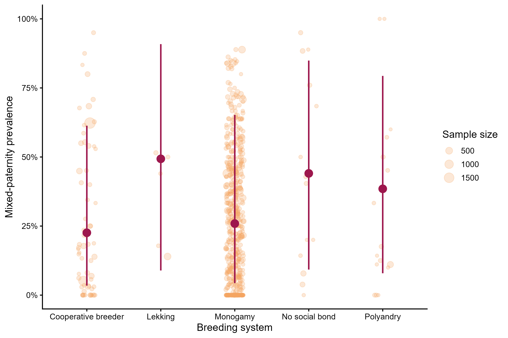
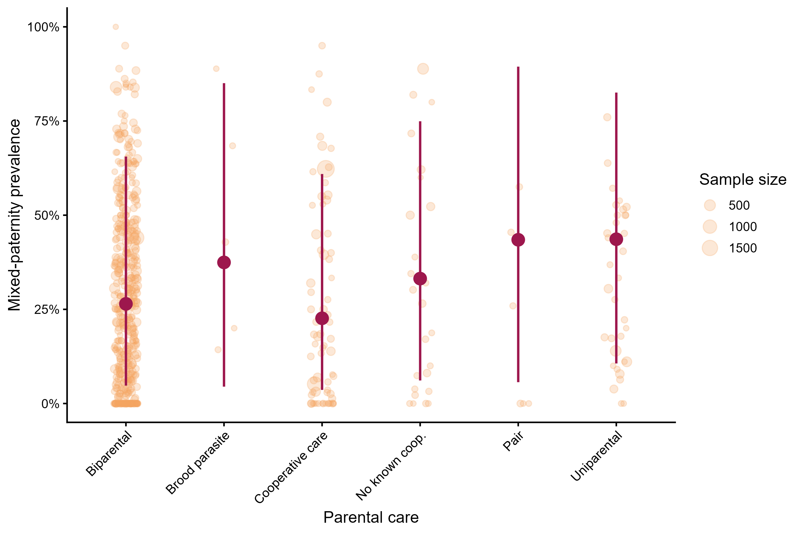
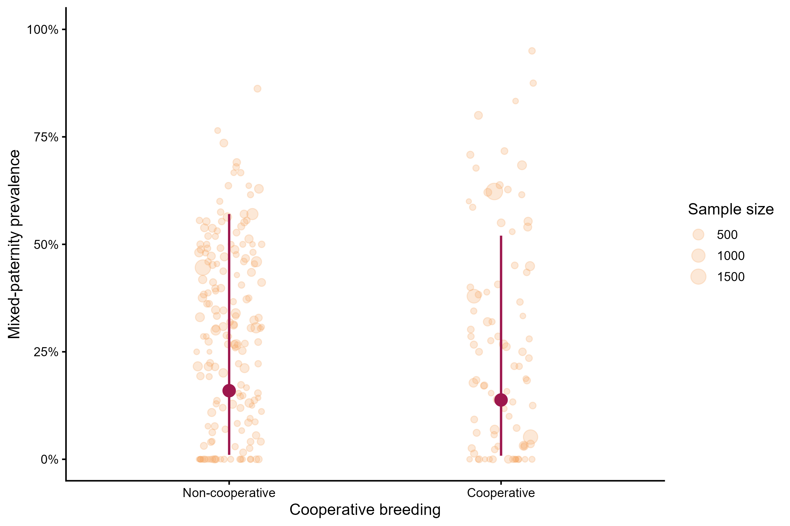
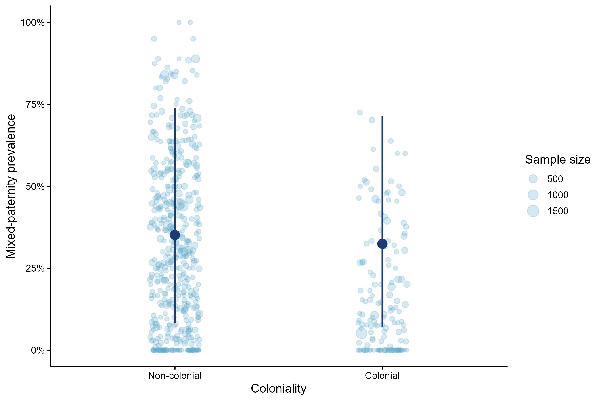

| Moderator | Classification_source | Notes |
|---|---|---|
| Breeding system | Brouwer and Griffith (2019) | Rare categories with fewer than five observations were excluded. |
| Mono-/polygamy | BIRDBASE Sekercioglu et al. 2025 | A mixed category was created for records coded as both monogamous and polygamous. |
| Parental care | Cockburn (2006); Griesser et al. (2017) | Used to represent variation in parental-care organisation. |
| Cooperative breeding | Co-BreeD Mocha et al. 2025 | Used to classify cooperative-breeding status. |
| Nest type | BIRDBASE | Simplified into broad nest-architecture categories. |
| Migration | BIRDBASE | Analysed as strong versus weak migrant categories. |
| Coloniality | BIRDBASE | Analysed as colonial versus non-colonial species. |
| Clutch size | Species-level life-history data | Maximum clutch size, scaled before model fitting. |
| Body mass | Species-level life-history data | Adult body mass, log10-transformed and scaled before model fitting. |
| Absolute latitude | Population-level geographic data | Absolute latitude, scaled before model fitting. |
6 Biological moderators
This section presents single-moderator models for biological predictors of brood-level mixed paternity, combining breeding-system, parental-care, ecological, life-history, and geographic moderators. These models evaluate whether mixed-paternity prevalence varies with breeding-system classifications, parental care, cooperative breeding, nest type, migration status, coloniality, clutch size, body mass, and absolute latitude, while retaining the same multilevel phylogenetic beta-binomial structure used in the overall model.
6.1 Classification sources
6.2 Packages
The R packages required for model fitting.
6.3 Load prepared objects
6.4 Dataset sizes
The table below shows the number of observations available for each biological moderator after removing missing values.
| Moderator | Observations |
|---|---|
| Breeding system: Brouwer and Griffith | 605 |
| Breeding system: BIRDBASE | 510 |
| Parental care | 605 |
| Cooperative breeding | 259 |
| Nest type | 587 |
| Migration | 619 |
| Coloniality | 619 |
| Maximum clutch size | 618 |
| Body mass | 619 |
| Absolute latitude | 592 |
6.5 Model
This helper function documents the shared model structure used for all single-moderator models.
Code
fit_single_moderator <- function(formula, data) {
brm(
formula = formula,
data = data,
family = beta_binomial(link = "logit"),
data2 = list(phylo_mat = phylo_mat),
chains = 4,
cores = 4,
iter = 10000,
warmup = 5000,
control = list(
adapt_delta = 0.99,
max_treedepth = 15
),
seed = 123
)
}6.6 Breeding system: Brouwer and Griffith classification
This model tested whether mixed-paternity prevalence differed among breeding-system categories based on the Brouwer and Griffith classification. Rare categories with fewer than five observations were excluded before model fitting.
6.6.1 Figure
Code
knitr::include_graphics("Figures/Figuresbreeding_system.png")
Light points show observed study-level prevalence, with point size proportional to the number of sampled broods; dark points and vertical intervals show model-predicted prevalence and 95% credible intervals for each category.
6.6.2 Model summary
Code
model_breeding_system_0 <- readRDS("models/model_breeding_system_0.rds")
summary(model_breeding_system_0) Family: beta_binomial
Links: mu = logit
Formula: n_mixed_broods | trials(n_total_broods) ~ 0 + breeding_system + (1 | Study_ID) + (1 | species_nonphylo) + (1 | gr(species_phylo_brms, cov = phylo_mat))
Data: data_breeding_system (Number of observations: 605)
Draws: 4 chains, each with iter = 10000; warmup = 5000; thin = 1;
total post-warmup draws = 20000
Multilevel Hyperparameters:
~species_nonphylo (Number of levels: 368)
Estimate Est.Error l-95% CI u-95% CI Rhat Bulk_ESS Tail_ESS
sd(Intercept) 0.71 0.11 0.48 0.92 1.00 1998 3819
~species_phylo_brms (Number of levels: 368)
Estimate Est.Error l-95% CI u-95% CI Rhat Bulk_ESS Tail_ESS
sd(Intercept) 1.78 0.25 1.33 2.29 1.00 2097 5100
~Study_ID (Number of levels: 541)
Estimate Est.Error l-95% CI u-95% CI Rhat Bulk_ESS Tail_ESS
sd(Intercept) 0.24 0.12 0.02 0.46 1.01 799 2219
Regression Coefficients:
Estimate Est.Error l-95% CI u-95% CI Rhat
breeding_systemcooperative_breeder -1.46 0.97 -3.34 0.46 1.00
breeding_systemlekking -0.03 1.17 -2.32 2.30 1.00
breeding_systemmonogamy -1.24 0.94 -3.09 0.63 1.00
breeding_systemno_social_bond -0.29 1.02 -2.28 1.73 1.00
breeding_systempolyandry -0.56 0.97 -2.45 1.35 1.00
Bulk_ESS Tail_ESS
breeding_systemcooperative_breeder 4406 7647
breeding_systemlekking 5144 8924
breeding_systemmonogamy 4296 6807
breeding_systemno_social_bond 4609 7956
breeding_systempolyandry 4582 7925
Further Distributional Parameters:
Estimate Est.Error l-95% CI u-95% CI Rhat Bulk_ESS Tail_ESS
phi 20.62 5.91 13.35 36.11 1.01 864 1835
Draws were sampled using sampling(NUTS). For each parameter, Bulk_ESS
and Tail_ESS are effective sample size measures, and Rhat is the potential
scale reduction factor on split chains (at convergence, Rhat = 1).6.6.3 Prevalence table
| Breeding-system category | Estimated prevalence (%) | Lower 95% CrI | Upper 95% CrI |
|---|---|---|---|
| cooperative_breeder | 18.88 | 3.42 | 61.33 |
| lekking | 49.20 | 8.92 | 90.86 |
| monogamy | 22.49 | 4.34 | 65.24 |
| no_social_bond | 42.82 | 9.25 | 84.91 |
| polyandry | 36.37 | 7.91 | 79.36 |
6.6.4 Post-hoc pairwise contrasts
Pairwise contrasts among breeding-system categories were calculated from the zero-intercept model. Estimates are reported on the logit scale.
| contrast | estimate | lower.HPD | upper.HPD |
|---|---|---|---|
| cooperative_breeder - lekking | -1.416 | -2.818 | 0.041 |
| cooperative_breeder - monogamy | -0.217 | -0.681 | 0.222 |
| cooperative_breeder - no_social_bond | -1.160 | -2.133 | -0.241 |
| cooperative_breeder - polyandry | -0.895 | -1.760 | 0.006 |
| lekking - monogamy | 1.200 | -0.159 | 2.588 |
| lekking - no_social_bond | 0.252 | -1.243 | 1.744 |
| lekking - polyandry | 0.526 | -1.023 | 2.032 |
| monogamy - no_social_bond | -0.946 | -1.788 | -0.078 |
| monogamy - polyandry | -0.678 | -1.498 | 0.107 |
| no_social_bond - polyandry | 0.266 | -0.833 | 1.359 |
6.7 BIRDBASE breeding-system classification
This model tested whether mixed-paternity prevalence differed among monogamous, polygamous, and mixed mating-system categories derived from the BIRDBASE breeding-system classification. The mixed category was created during data preparation for cases in which both monogamous and polygamous classifications were simultaneously assigned in the original BIRDBASE coding.
6.7.1 Figure
Code
knitr::include_graphics("Figures/Figuresmono_poly.png")
Light points show observed study-level prevalence by BIRDBASE mating-system category, with point size proportional to the number of sampled broods; dark points and vertical intervals show model-predicted prevalence and 95% credible intervals.
6.7.2 Model summary
Code
model_mono_poly_0 <- readRDS("models/model_mono_poly_0.rds")
summary(model_mono_poly_0) Family: beta_binomial
Links: mu = logit
Formula: n_mixed_broods | trials(n_total_broods) ~ 0 + mono_poly_model + (1 | Study_ID) + (1 | species_nonphylo) + (1 | gr(species_phylo_brms, cov = phylo_mat))
Data: data_mono_poly (Number of observations: 510)
Draws: 4 chains, each with iter = 10000; warmup = 5000; thin = 1;
total post-warmup draws = 20000
Multilevel Hyperparameters:
~species_nonphylo (Number of levels: 287)
Estimate Est.Error l-95% CI u-95% CI Rhat Bulk_ESS Tail_ESS
sd(Intercept) 0.47 0.16 0.11 0.75 1.00 1256 1363
~species_phylo_brms (Number of levels: 287)
Estimate Est.Error l-95% CI u-95% CI Rhat Bulk_ESS Tail_ESS
sd(Intercept) 1.89 0.26 1.40 2.41 1.00 1941 3568
~Study_ID (Number of levels: 458)
Estimate Est.Error l-95% CI u-95% CI Rhat Bulk_ESS Tail_ESS
sd(Intercept) 0.37 0.13 0.06 0.58 1.00 706 1469
Regression Coefficients:
Estimate Est.Error l-95% CI u-95% CI Rhat Bulk_ESS
mono_poly_modelmixed -0.91 0.98 -2.80 1.07 1.00 6918
mono_poly_modelmonogamy -0.97 0.98 -2.86 1.00 1.00 6931
mono_poly_modelpolygamy -0.38 0.98 -2.26 1.60 1.00 6967
Tail_ESS
mono_poly_modelmixed 9367
mono_poly_modelmonogamy 9679
mono_poly_modelpolygamy 9754
Further Distributional Parameters:
Estimate Est.Error l-95% CI u-95% CI Rhat Bulk_ESS Tail_ESS
phi 25.09 9.76 12.99 49.39 1.00 725 2112
Draws were sampled using sampling(NUTS). For each parameter, Bulk_ESS
and Tail_ESS are effective sample size measures, and Rhat is the potential
scale reduction factor on split chains (at convergence, Rhat = 1).6.7.3 Prevalence table
| Mono-/polygamy category | Estimated prevalence (%) | Lower 95% CrI | Upper 95% CrI |
|---|---|---|---|
| mixed | 28.63 | 5.73 | 74.42 |
| monogamy | 27.50 | 5.40 | 73.18 |
| polygamy | 40.68 | 9.43 | 83.13 |
6.7.4 Post-hoc pairwise contrasts
Pairwise contrasts among breeding system categories were calculated from the zero-intercept model. Estimates are reported on the logit scale.
| contrast | estimate | lower.HPD | upper.HPD |
|---|---|---|---|
| mixed - monogamy | 0.056 | -0.247 | 0.374 |
| mixed - polygamy | -0.534 | -1.049 | -0.029 |
| monogamy - polygamy | -0.588 | -1.093 | -0.085 |
6.8 Parental care
This model tested whether mixed-paternity prevalence differed among parental-care categories.
6.8.1 Figure
Code
knitr::include_graphics("Figures/Figuresparental_care.png")
Light points show observed study-level prevalence by parental-care category, with point size proportional to the number of sampled broods; dark points and vertical intervals show model-predicted prevalence and 95% credible intervals.
6.8.2 Model summary
Code
model_parental_care_0 <- readRDS("models/model_parental_care_0.rds")
summary(model_parental_care_0) Family: beta_binomial
Links: mu = logit
Formula: n_mixed_broods | trials(n_total_broods) ~ 0 + parental_care + (1 | Study_ID) + (1 | species_nonphylo) + (1 | gr(species_phylo_brms, cov = phylo_mat))
Data: data_parental_care (Number of observations: 605)
Draws: 4 chains, each with iter = 10000; warmup = 5000; thin = 1;
total post-warmup draws = 20000
Multilevel Hyperparameters:
~species_nonphylo (Number of levels: 364)
Estimate Est.Error l-95% CI u-95% CI Rhat Bulk_ESS Tail_ESS
sd(Intercept) 0.69 0.11 0.47 0.90 1.00 2842 5695
~species_phylo_brms (Number of levels: 364)
Estimate Est.Error l-95% CI u-95% CI Rhat Bulk_ESS Tail_ESS
sd(Intercept) 1.77 0.23 1.33 2.24 1.00 3535 7977
~Study_ID (Number of levels: 544)
Estimate Est.Error l-95% CI u-95% CI Rhat Bulk_ESS Tail_ESS
sd(Intercept) 0.27 0.13 0.02 0.50 1.01 722 2539
Regression Coefficients:
Estimate Est.Error l-95% CI u-95% CI Rhat Bulk_ESS
parental_carebiparental -1.19 0.92 -3.00 0.64 1.00 5790
parental_carebroodparasite -0.66 1.21 -3.06 1.74 1.00 8132
parental_carecooperation -1.44 0.94 -3.28 0.44 1.00 5835
parental_carenk_cooperation -0.83 0.97 -2.73 1.10 1.00 6095
parental_carepair -0.34 1.26 -2.81 2.14 1.00 8272
parental_careuniparental -0.30 0.94 -2.13 1.55 1.00 6067
Tail_ESS
parental_carebiparental 9380
parental_carebroodparasite 12431
parental_carecooperation 9690
parental_carenk_cooperation 9722
parental_carepair 11716
parental_careuniparental 10040
Further Distributional Parameters:
Estimate Est.Error l-95% CI u-95% CI Rhat Bulk_ESS Tail_ESS
phi 20.09 6.44 12.39 36.59 1.01 810 1878
Draws were sampled using sampling(NUTS). For each parameter, Bulk_ESS
and Tail_ESS are effective sample size measures, and Rhat is the potential
scale reduction factor on split chains (at convergence, Rhat = 1).6.8.3 Prevalence table
Estimated mixed-paternity prevalence for each parental-care category was obtained from the zero-intercept model and back-transformed from the logit scale to percentages.
| Parental-care category | Estimated prevalence (%) | Lower 95% CrI | Upper 95% CrI |
|---|---|---|---|
| biparental | 23.25 | 4.75 | 65.56 |
| broodparasite | 34.08 | 4.48 | 85.05 |
| cooperation | 19.14 | 3.61 | 60.93 |
| nk_cooperation | 30.30 | 6.12 | 74.93 |
| pair | 41.52 | 5.67 | 89.43 |
| uniparental | 42.51 | 10.63 | 82.55 |
6.8.4 Post-hoc pairwise contrasts
Pairwise contrasts among parental-care categories were calculated from the zero-intercept model. Estimates are reported on the logit scale.
Code
#| echo: false
#| message: false
#| warning: false
pairwise_parental_care_0 <- readRDS("models/pairwise_parental_care_0.rds")
parental_care_posthoc_table <- as.data.frame(pairwise_parental_care_0)
knitr::kable(parental_care_posthoc_table, digits = 3)| contrast | estimate | lower.HPD | upper.HPD |
|---|---|---|---|
| biparental - broodparasite | -0.545 | -2.172 | 1.085 |
| biparental - cooperation | 0.244 | -0.191 | 0.690 |
| biparental - nk_cooperation | -0.359 | -0.968 | 0.284 |
| biparental - pair | -0.853 | -2.547 | 0.791 |
| biparental - uniparental | -0.892 | -1.494 | -0.273 |
| broodparasite - cooperation | 0.785 | -0.871 | 2.448 |
| broodparasite - nk_cooperation | 0.179 | -1.584 | 1.849 |
| broodparasite - pair | -0.321 | -2.647 | 1.993 |
| broodparasite - uniparental | -0.354 | -2.097 | 1.352 |
| cooperation - nk_cooperation | -0.608 | -1.355 | 0.113 |
| cooperation - pair | -1.103 | -2.829 | 0.592 |
| cooperation - uniparental | -1.138 | -1.865 | -0.398 |
| nk_cooperation - pair | -0.487 | -2.217 | 1.301 |
| nk_cooperation - uniparental | -0.532 | -1.381 | 0.289 |
| pair - uniparental | -0.040 | -1.818 | 1.721 |
6.9 Cooperative breeding
This model tested whether mixed-paternity prevalence differed between cooperative and non-cooperative breeding species. The intercept represents the reference category - non-cooperative breeders.
6.9.1 Figure
Code
knitr::include_graphics("Figures/Figurescooperative_breeding.png")
Light points show observed study-level prevalence by cooperative-breeding status, with point size proportional to the number of sampled broods; dark points and vertical intervals show model-predicted prevalence and 95% credible intervals.
6.9.2 Model-summary
Code
model_cooperative <- readRDS("models/model_cooperative.rds")
summary(model_cooperative) Family: beta_binomial
Links: mu = logit
Formula: n_mixed_broods | trials(n_total_broods) ~ cooperative_breeding + (1 | Study_ID) + (1 | species_nonphylo) + (1 | gr(species_phylo_brms, cov = phylo_mat))
Data: data_cooperative (Number of observations: 259)
Draws: 4 chains, each with iter = 10000; warmup = 5000; thin = 1;
total post-warmup draws = 20000
Multilevel Hyperparameters:
~species_nonphylo (Number of levels: 115)
Estimate Est.Error l-95% CI u-95% CI Rhat Bulk_ESS Tail_ESS
sd(Intercept) 0.55 0.20 0.11 0.92 1.00 2093 2576
~species_phylo_brms (Number of levels: 115)
Estimate Est.Error l-95% CI u-95% CI Rhat Bulk_ESS Tail_ESS
sd(Intercept) 1.89 0.34 1.28 2.61 1.00 3905 8378
~Study_ID (Number of levels: 228)
Estimate Est.Error l-95% CI u-95% CI Rhat Bulk_ESS Tail_ESS
sd(Intercept) 0.31 0.16 0.02 0.60 1.00 985 2931
Regression Coefficients:
Estimate Est.Error l-95% CI u-95% CI Rhat Bulk_ESS
Intercept -2.09 1.23 -4.56 0.28 1.00 12128
cooperative_breedingyes -0.21 0.26 -0.72 0.30 1.00 16075
Tail_ESS
Intercept 13006
cooperative_breedingyes 14804
Further Distributional Parameters:
Estimate Est.Error l-95% CI u-95% CI Rhat Bulk_ESS Tail_ESS
phi 18.97 8.23 10.14 41.04 1.00 1135 2475
Draws were sampled using sampling(NUTS). For each parameter, Bulk_ESS
and Tail_ESS are effective sample size measures, and Rhat is the potential
scale reduction factor on split chains (at convergence, Rhat = 1).6.9.3 Model estimates
| Parameter | Estimate | Lower 95% CrI | Upper 95% CrI |
|---|---|---|---|
| Intercept | -2.092 | -4.564 | 0.284 |
| cooperative_breedingyes | -0.209 | -0.716 | 0.304 |
6.10 Nest type architecture
This model tested whether mixed-paternity prevalence differed among nest-type categories. Nest type was derived from BIRDBASE and simplified into four broad nest-architecture categories: cavity, ground, open, and other enclosed nests. Cavity nests included tree cavities and crevices; ground nests included burrows, scrapes, mounds, and nests placed directly on or in the ground; open nests included cups, saucers, platforms, and half-cups; and other enclosed nests included domes, pendant and globular nests, as well as nests built in other birds’ nests.
6.10.1 Figure
Code
knitr::include_graphics("Figures/Figuresnest_type.png")
Light points show observed study-level prevalence by nest-type category, with point size proportional to the number of sampled broods; dark points and vertical intervals show model-predicted prevalence and 95% credible intervals.
6.10.2 Model summary
Code
model_nest_type <- readRDS("models/model_nest_type_0.rds")
summary(model_nest_type) Family: beta_binomial
Links: mu = logit
Formula: n_mixed_broods | trials(n_total_broods) ~ 0 + nest_type_model + (1 | Study_ID) + (1 | species_nonphylo) + (1 | gr(species_phylo_brms, cov = phylo_mat))
Data: data_nest_type (Number of observations: 587)
Draws: 4 chains, each with iter = 10000; warmup = 5000; thin = 1;
total post-warmup draws = 20000
Multilevel Hyperparameters:
~species_nonphylo (Number of levels: 350)
Estimate Est.Error l-95% CI u-95% CI Rhat Bulk_ESS Tail_ESS
sd(Intercept) 0.62 0.12 0.36 0.85 1.00 1992 3313
~species_phylo_brms (Number of levels: 350)
Estimate Est.Error l-95% CI u-95% CI Rhat Bulk_ESS Tail_ESS
sd(Intercept) 1.97 0.26 1.48 2.49 1.00 2289 5076
~Study_ID (Number of levels: 526)
Estimate Est.Error l-95% CI u-95% CI Rhat Bulk_ESS Tail_ESS
sd(Intercept) 0.24 0.13 0.02 0.49 1.00 771 1783
Regression Coefficients:
Estimate Est.Error l-95% CI u-95% CI Rhat
nest_type_modelcavity -0.94 1.03 -2.97 1.11 1.00
nest_type_modelground -0.66 1.02 -2.65 1.36 1.00
nest_type_modelopen -0.96 1.03 -2.96 1.09 1.00
nest_type_modelother_enclosed -1.16 1.05 -3.22 0.92 1.00
Bulk_ESS Tail_ESS
nest_type_modelcavity 5227 7804
nest_type_modelground 5318 7939
nest_type_modelopen 5274 7519
nest_type_modelother_enclosed 5209 7308
Further Distributional Parameters:
Estimate Est.Error l-95% CI u-95% CI Rhat Bulk_ESS Tail_ESS
phi 19.44 6.27 12.27 36.14 1.00 853 1554
Draws were sampled using sampling(NUTS). For each parameter, Bulk_ESS
and Tail_ESS are effective sample size measures, and Rhat is the potential
scale reduction factor on split chains (at convergence, Rhat = 1).6.10.3 Nest type model estimates
| Nest-type category | Estimated prevalence (%) | Lower 95% CrI | Upper 95% CrI |
|---|---|---|---|
| cavity | 28.00 | 4.87 | 75.28 |
| ground | 33.97 | 6.59 | 79.60 |
| open | 27.62 | 4.91 | 74.76 |
| other_enclosed | 23.90 | 3.84 | 71.42 |
6.10.4 Post-hoc pairwise contrasts
Pairwise contrasts among nest-type categories were calculated from the zero-intercept model. Estimates are reported on the logit scale.
| contrast | estimate | lower.HPD | upper.HPD |
|---|---|---|---|
| cavity - ground | -0.280 | -0.807 | 0.278 |
| cavity - open | 0.019 | -0.421 | 0.452 |
| cavity - other_enclosed | 0.212 | -0.421 | 0.838 |
| ground - open | 0.298 | -0.203 | 0.799 |
| ground - other_enclosed | 0.494 | -0.175 | 1.134 |
| open - other_enclosed | 0.196 | -0.374 | 0.783 |
6.11 Migration
This model tested whether mixed-paternity prevalence differed between strong and weak migrant categories. Migration status was analysed using two categories following BIRDBASE database: strong migrants and weak migrants. Here, strong migrants represent regular seasonal or long-distance migration, whereas weak migrants correspond to partial migration.
6.11.1 Figure
Code
knitr::include_graphics("Figures/Figuresmigration.png")
Light points show observed study-level prevalence by migration category, with point size proportional to the number of sampled broods; dark points and vertical intervals show model-predicted prevalence and 95% credible intervals.
6.11.2 Model summary
Code
model_migration <- readRDS("models/model_migration.rds")
summary(model_migration) Family: beta_binomial
Links: mu = logit
Formula: n_mixed_broods | trials(n_total_broods) ~ migration + (1 | Study_ID) + (1 | species_nonphylo) + (1 | gr(species_phylo_brms, cov = phylo_mat))
Data: data_migration (Number of observations: 619)
Draws: 4 chains, each with iter = 10000; warmup = 5000; thin = 1;
total post-warmup draws = 20000
Multilevel Hyperparameters:
~species_nonphylo (Number of levels: 375)
Estimate Est.Error l-95% CI u-95% CI Rhat Bulk_ESS Tail_ESS
sd(Intercept) 0.66 0.11 0.43 0.87 1.00 2294 4142
~species_phylo_brms (Number of levels: 375)
Estimate Est.Error l-95% CI u-95% CI Rhat Bulk_ESS Tail_ESS
sd(Intercept) 1.83 0.23 1.39 2.31 1.00 2781 6528
~Study_ID (Number of levels: 554)
Estimate Est.Error l-95% CI u-95% CI Rhat Bulk_ESS Tail_ESS
sd(Intercept) 0.23 0.13 0.02 0.48 1.01 742 1854
Regression Coefficients:
Estimate Est.Error l-95% CI u-95% CI Rhat Bulk_ESS Tail_ESS
Intercept -0.44 0.89 -2.17 1.31 1.00 12596 13157
migrationWeak -0.39 0.16 -0.70 -0.07 1.00 19290 15611
Further Distributional Parameters:
Estimate Est.Error l-95% CI u-95% CI Rhat Bulk_ESS Tail_ESS
phi 18.06 5.06 11.97 31.35 1.01 803 1845
Draws were sampled using sampling(NUTS). For each parameter, Bulk_ESS
and Tail_ESS are effective sample size measures, and Rhat is the potential
scale reduction factor on split chains (at convergence, Rhat = 1).6.11.3 Model estimates
The intercept represents the reference migration category, while the remaining coefficients describe differences relative to that reference category on the logit scale.
| Parameter | Estimate | Lower 95% CrI | Upper 95% CrI |
|---|---|---|---|
| Intercept | -0.439 | -2.171 | 1.314 |
| migrationWeak | -0.387 | -0.704 | -0.066 |
6.12 Coloniality
This model tested whether mixed-paternity prevalence differed between colonial and non-colonial species following BIRDBASE database.
6.12.1 Figures
Code
knitr::include_graphics("Figures/Figurescoloniality.png")
Light points show observed study-level prevalence by coloniality status, with point size proportional to the number of sampled broods; dark points and vertical intervals show model-predicted prevalence and 95% credible intervals.
6.12.2 Model summary
Code
#| message: false
#| warning: false
#| code-fold: true
model_coloniality <- readRDS("models/model_coloniality.rds")
summary(model_coloniality) Family: beta_binomial
Links: mu = logit
Formula: n_mixed_broods | trials(n_total_broods) ~ coloniality + (1 | Study_ID) + (1 | species_nonphylo) + (1 | gr(species_phylo_brms, cov = phylo_mat))
Data: data_coloniality (Number of observations: 619)
Draws: 4 chains, each with iter = 10000; warmup = 5000; thin = 1;
total post-warmup draws = 20000
Multilevel Hyperparameters:
~species_nonphylo (Number of levels: 375)
Estimate Est.Error l-95% CI u-95% CI Rhat Bulk_ESS Tail_ESS
sd(Intercept) 0.68 0.11 0.46 0.89 1.00 2546 5066
~species_phylo_brms (Number of levels: 375)
Estimate Est.Error l-95% CI u-95% CI Rhat Bulk_ESS Tail_ESS
sd(Intercept) 1.81 0.23 1.38 2.30 1.00 3193 6255
~Study_ID (Number of levels: 554)
Estimate Est.Error l-95% CI u-95% CI Rhat Bulk_ESS Tail_ESS
sd(Intercept) 0.24 0.13 0.01 0.47 1.00 843 2485
Regression Coefficients:
Estimate Est.Error l-95% CI u-95% CI Rhat Bulk_ESS Tail_ESS
Intercept -0.71 0.87 -2.42 1.04 1.00 12867 13988
coloniality1 -0.14 0.20 -0.54 0.26 1.00 18449 16191
Further Distributional Parameters:
Estimate Est.Error l-95% CI u-95% CI Rhat Bulk_ESS Tail_ESS
phi 18.43 5.17 12.11 31.61 1.00 1006 2210
Draws were sampled using sampling(NUTS). For each parameter, Bulk_ESS
and Tail_ESS are effective sample size measures, and Rhat is the potential
scale reduction factor on split chains (at convergence, Rhat = 1).6.12.3 Model estimates
| Parameter | Estimate | Lower 95% CrI | Upper 95% CrI |
|---|---|---|---|
| Intercept | -0.711 | -2.424 | 1.036 |
| coloniality1 | -0.142 | -0.540 | 0.260 |
6.13 Clutch size
This model tested whether mixed-paternity prevalence was associated with maximum clutch size. Clutch size was scaled before model fitting, so the effect represents the change in log-odds of mixed paternity per one standard deviation increase in maximum clutch size.
6.13.1 Figure
Code
knitr::include_graphics("Figures/Figuresclutch_size.png")
Light points show observed study-level prevalence, with point size proportional to the number of sampled broods; the dark line and shaded ribbon show model-predicted prevalence and the 95% credible interval across maximum clutch size.
6.13.2 Model summary
Code
model_clutch_size <- readRDS("models/model_clutch_size.rds")
summary(model_clutch_size) Family: beta_binomial
Links: mu = logit
Formula: n_mixed_broods | trials(n_total_broods) ~ CS_max_sc + (1 | Study_ID) + (1 | species_nonphylo) + (1 | gr(species_phylo_brms, cov = phylo_mat))
Data: data_clutch_size (Number of observations: 618)
Draws: 4 chains, each with iter = 10000; warmup = 5000; thin = 1;
total post-warmup draws = 20000
Multilevel Hyperparameters:
~species_nonphylo (Number of levels: 374)
Estimate Est.Error l-95% CI u-95% CI Rhat Bulk_ESS Tail_ESS
sd(Intercept) 0.68 0.11 0.45 0.88 1.00 2351 4534
~species_phylo_brms (Number of levels: 374)
Estimate Est.Error l-95% CI u-95% CI Rhat Bulk_ESS Tail_ESS
sd(Intercept) 1.79 0.23 1.37 2.26 1.00 2692 5330
~Study_ID (Number of levels: 553)
Estimate Est.Error l-95% CI u-95% CI Rhat Bulk_ESS Tail_ESS
sd(Intercept) 0.23 0.13 0.01 0.47 1.00 823 1957
Regression Coefficients:
Estimate Est.Error l-95% CI u-95% CI Rhat Bulk_ESS Tail_ESS
Intercept -0.88 0.88 -2.62 0.85 1.00 8670 11179
CS_max_sc 0.33 0.11 0.12 0.55 1.00 12371 13993
Further Distributional Parameters:
Estimate Est.Error l-95% CI u-95% CI Rhat Bulk_ESS Tail_ESS
phi 18.27 5.24 12.06 31.86 1.00 935 1639
Draws were sampled using sampling(NUTS). For each parameter, Bulk_ESS
and Tail_ESS are effective sample size measures, and Rhat is the potential
scale reduction factor on split chains (at convergence, Rhat = 1).6.13.3 Model estimates
Code
#| echo: false
#| message: false
#| warning: false
s_clutch_size <- summary(model_clutch_size)
clutch_size_table <- tibble::tibble(
Parameter = rownames(s_clutch_size$fixed),
Estimate = s_clutch_size$fixed[, "Estimate"],
`Lower 95% CrI` = s_clutch_size$fixed[, "l-95% CI"],
`Upper 95% CrI` = s_clutch_size$fixed[, "u-95% CI"]
)
knitr::kable(clutch_size_table, digits = 3)| Parameter | Estimate | Lower 95% CrI | Upper 95% CrI |
|---|---|---|---|
| Intercept | -0.878 | -2.622 | 0.848 |
| CS_max_sc | 0.333 | 0.115 | 0.548 |
6.14 Body mass
This model tested whether mixed-paternity prevalence was associated with adult body mass. Body mass was scaled before model fitting, so the effect represents the change in log-odds of mixed paternity per one standard deviation increase in body mass. Body mass was strongly right-skewed across species; therefore, body mass values were log10-transformed and standardised prior to analysis. Model coefficients thus represent the change in log-odds of mixed paternity associated with a one standard deviation increase in log-transformed body mass.
6.14.1 Figure
Code
knitr::include_graphics("Figures/Figuresbody_mass.png")
Light points show observed study-level prevalence, with point size proportional to the number of sampled broods; the dark line and shaded ribbon show model-predicted prevalence and the 95% credible interval across log-transformed body mass.
6.14.2 Model summary
Code
model_body_mass_log <- readRDS("models/model_log_body_mass.rds")
summary(model_body_mass_log) Family: beta_binomial
Links: mu = logit
Formula: n_mixed_broods | trials(n_total_broods) ~ log_body_mass_sc + (1 | Study_ID) + (1 | species_nonphylo) + (1 | gr(species_phylo_brms, cov = phylo_mat))
Data: data_body_mass (Number of observations: 619)
Draws: 4 chains, each with iter = 10000; warmup = 5000; thin = 1;
total post-warmup draws = 20000
Multilevel Hyperparameters:
~species_nonphylo (Number of levels: 375)
Estimate Est.Error l-95% CI u-95% CI Rhat Bulk_ESS Tail_ESS
sd(Intercept) 0.67 0.11 0.45 0.88 1.00 2028 3134
~species_phylo_brms (Number of levels: 375)
Estimate Est.Error l-95% CI u-95% CI Rhat Bulk_ESS Tail_ESS
sd(Intercept) 1.85 0.24 1.40 2.34 1.00 2322 4103
~Study_ID (Number of levels: 554)
Estimate Est.Error l-95% CI u-95% CI Rhat Bulk_ESS Tail_ESS
sd(Intercept) 0.24 0.13 0.01 0.48 1.00 791 1719
Regression Coefficients:
Estimate Est.Error l-95% CI u-95% CI Rhat Bulk_ESS Tail_ESS
Intercept -0.72 0.93 -2.56 1.13 1.00 7249 10135
log_body_mass_sc -0.01 0.15 -0.30 0.29 1.00 9337 13400
Further Distributional Parameters:
Estimate Est.Error l-95% CI u-95% CI Rhat Bulk_ESS Tail_ESS
phi 18.74 5.42 12.16 32.91 1.00 973 1703
Draws were sampled using sampling(NUTS). For each parameter, Bulk_ESS
and Tail_ESS are effective sample size measures, and Rhat is the potential
scale reduction factor on split chains (at convergence, Rhat = 1).6.14.3 Model estimates
Code
#| echo: false
#| message: false
#| warning: false
s_body_mass <- summary(model_body_mass_log)
body_mass_table <- tibble::tibble(
Parameter = rownames(s_body_mass$fixed),
Estimate = s_body_mass$fixed[, "Estimate"],
`Lower 95% CrI` = s_body_mass$fixed[, "l-95% CI"],
`Upper 95% CrI` = s_body_mass$fixed[, "u-95% CI"]
)
knitr::kable(body_mass_table, digits = 3)| Parameter | Estimate | Lower 95% CrI | Upper 95% CrI |
|---|---|---|---|
| Intercept | -0.722 | -2.559 | 1.126 |
| log_body_mass_sc | -0.008 | -0.303 | 0.289 |
6.15 Absolute latitude
This model tested whether mixed-paternity prevalence varied with absolute latitude. Absolute latitude was used to examine broad geographic patterns independent of hemisphere, with larger values corresponding to populations located farther from the equator. Absolute latitude was scaled before model fitting, so the effect represents the change in log-odds of mixed paternity per one standard deviation increase in absolute latitude.
6.15.1 Figure
Code
knitr::include_graphics("Figures/Figuresabs_latitude.png")
Light points show observed study-level prevalence, with point size proportional to the number of sampled broods; the dark line and shaded ribbon show model-predicted prevalence and the 95% credible interval across absolute latitude.
6.15.2 Model summary
Code
model_abs_latitude <- readRDS("models/model_abs_latitude.rds")
summary(model_abs_latitude) Family: beta_binomial
Links: mu = logit
Formula: n_mixed_broods | trials(n_total_broods) ~ abs_lat_sc + (1 | Study_ID) + (1 | species_nonphylo) + (1 | gr(species_phylo_brms, cov = phylo_mat))
Data: data_abs_latitude (Number of observations: 592)
Draws: 4 chains, each with iter = 10000; warmup = 5000; thin = 1;
total post-warmup draws = 20000
Multilevel Hyperparameters:
~species_nonphylo (Number of levels: 363)
Estimate Est.Error l-95% CI u-95% CI Rhat Bulk_ESS Tail_ESS
sd(Intercept) 0.70 0.11 0.47 0.91 1.00 1902 2613
~species_phylo_brms (Number of levels: 363)
Estimate Est.Error l-95% CI u-95% CI Rhat Bulk_ESS Tail_ESS
sd(Intercept) 1.85 0.24 1.40 2.35 1.00 2205 3787
~Study_ID (Number of levels: 532)
Estimate Est.Error l-95% CI u-95% CI Rhat Bulk_ESS Tail_ESS
sd(Intercept) 0.21 0.12 0.01 0.45 1.01 695 1519
Regression Coefficients:
Estimate Est.Error l-95% CI u-95% CI Rhat Bulk_ESS Tail_ESS
Intercept -0.80 0.90 -2.57 1.01 1.00 7529 10504
abs_lat_sc -0.13 0.06 -0.25 -0.01 1.00 15544 15085
Further Distributional Parameters:
Estimate Est.Error l-95% CI u-95% CI Rhat Bulk_ESS Tail_ESS
phi 19.26 5.45 12.81 33.89 1.01 759 1252
Draws were sampled using sampling(NUTS). For each parameter, Bulk_ESS
and Tail_ESS are effective sample size measures, and Rhat is the potential
scale reduction factor on split chains (at convergence, Rhat = 1).6.15.3 Model estimates
| Parameter | Estimate | Lower 95% CrI | Upper 95% CrI |
|---|---|---|---|
| Intercept | -0.798 | -2.571 | 1.008 |
| abs_lat_sc | -0.128 | -0.251 | -0.007 |
6.16 Heterogeneity summary
The table below compares residual heterogeneity across all biological moderator models.
| Model | Study SD | Non-phylogenetic species SD | Phylogenetic species SD | Phi |
|---|---|---|---|---|
| Overall model | 0.238 | 0.678 | 1.820 | 18.568 |
| Breeding system | 0.236 | 0.707 | 1.779 | 20.624 |
| Mono-/polygamy | 0.367 | 0.472 | 1.885 | 25.094 |
| Parental care | 0.274 | 0.694 | 1.765 | 20.088 |
| Cooperative breeding | 0.311 | 0.548 | 1.892 | 18.972 |
| Nest type | 0.243 | 0.620 | 1.968 | 19.435 |
| Migration | 0.229 | 0.657 | 1.828 | 18.063 |
| Coloniality | 0.237 | 0.680 | 1.815 | 18.434 |
| Clutch size | 0.233 | 0.676 | 1.788 | 18.265 |
| Body mass | 0.244 | 0.674 | 1.849 | 18.735 |
| Absolute latitude | 0.206 | 0.701 | 1.854 | 19.259 |